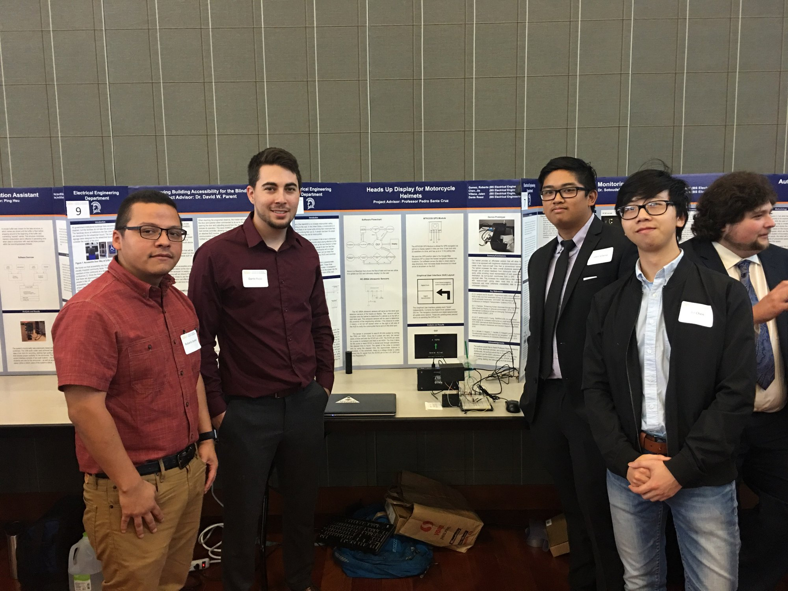

Welcome to my first website! My name is Jie but you can call me Jacky or Jay, as many of my friends do. I was first introduced to HTML by one of my college roommate who was a web-developer. The purpose of this website is to showcase some projects that I've done or currently working on, and it also serves as a place to post and organize personal tutorials, notes, pictures and etc.
A connect4 game made with python. The graphical interface is created using pygame. A computer player is implemented using minimax algorithm and a set of custom hueristics.
[Click the header for more detail.]
Currently working on a computer vision and machine learning based approach to the game.
For my senior project, my group and I designed and created a prototype heads up display (HUD) for motorcycle helmets. The goal of this project was to implemented some sort of device that can improve the driving experience and road safety for motorcyclists. Demo of turn base GPS on Youtube.com
Protype display method using reflection:
The graphical interface using Python tkinter:

This section will feature some projects I've done in school.
Notes, tutorials, and pictures. [may move to another page]
Last updated on 8/19/2018: Currently the site is still under construction.
List of things to do: